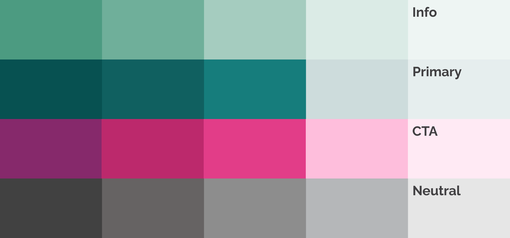

WBC Cares is a non-profit organization founded by the World Boxing Council. Its mission is to make a positive impact on communities and athletes through various programs. Whether it's providing supplies, offering mentorship, donating resources, promoting education, raising awareness about mental health, or connecting people with healthcare professionals, WBC Cares is dedicated to helping individuals worldwide.
I participated in this project as a freelance UX Designer. I was the only designer working on it, taking on a generalist role. My main goal was to create a unique and branded user experience, collaborating closely with the development team.
What I learned the most during this project:
- Information architecture
- Wireframing
- Prototyping
- Testing
Problem
WBC Cares faced a challenge because they didn't have a simple and remote donation tool for their allies and supporters. This left them feeling powerless and frustrated about how to contribute effectively to the cause.
Goals
- Creating an easy-to-use donating tool to simplify and streamline the donation process.
- Providing a communication channel that enables organizations to connect with the WBC Cares team, promoting meaningful partnerships.
- Designing the fist web platform for WBC Cares that reflects their values and mission, providing a dedicated online space for their cause.
Process
As the core the challenge was "to streamline the donation process", surrounded by several tasks, I did not want to jump right into ideating concepts based on assumptions. Instead, I tried to understand as much of the donating experience as possible in this limited time. This approach aimed to effectively communicate the values of the cause.

Research
Creating a donation experience is challenging due to the sensitive and emotional nature of the topic. Also, understanding the motivations and decision-making process behind donations can be complex, as it is influenced by personal values, beliefs, and priorities.
User interviews.
As WBC Cares has a group of regular donors and partnerships with allied organizations, I chose to conduct user interviews with a selected subset of these individuals and organization representatives. The interviews aimed to gather insights into their experiences, motivations, and perspectives on WBC Cares' cause and donation process. This valuable information helps improve the organization's understanding of its supporters and enhance the donation experience.
When preparing the script, I focused on open-ended questions, enabling participants to freely share their emotions and thought processes when deciding to donate. I maintained an unbiased and open approach to identify their motivations. Creating a non-judgmental environment allowed me to gain valuable insights into the factors influencing their decision-making and understand their underlying motivations for donating.
Data analysis.
With both diary entries and interview transcripts, I embark on a rigorous data analysis process. I carefully review and analyze the collected data, identifying patterns, themes, and key insights.
Our users
Ideating
Information architecture
After grasping the goals and needs of the users, I proceeded to create a well-organized structure for the website.

Wireframes
Once we have an idea to pursue, we begin by working on the wireframes, while simultaneously exploring various solutions and defining the architecture.
Prototyping
Color palette
Prototypes

Learnings and impact
This project provided me valuable insights and learnings. Understanding the client's vision and goals was essential to meet their expectations. Adopting a user-centric approach and conducting research helped address user needs effectively. Effective collaboration and clear communication with the client played a significant role in achieving a successful outcome.
My key take aways from this experience are:
⚫️ Designing and implementing a remote research strategy.
⚫️ Working on a limited time to deliver a great product.
⚫️ Doing️ secondary research to adjust a limited budget.
⚫️ Working as a team of one.